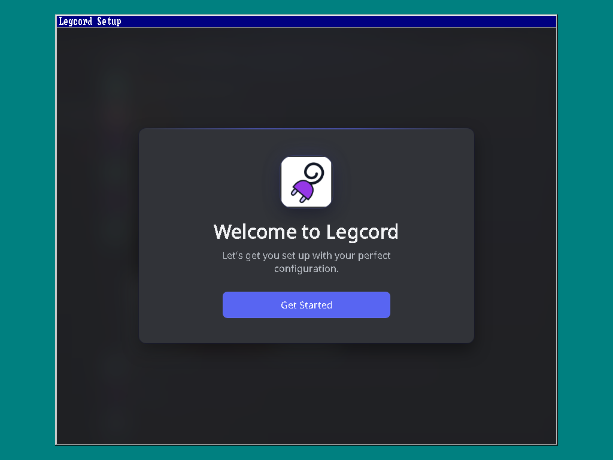

그래픽 + Notepad++ 미리보기
GOP 기본 드라이버, Notepad++ 8.9.8.1용 호환 구성과 해당 소스입니다. 별도의 Windows 98 SE 설치본과 수동 준비가 필요합니다.
구성요소 ZIP · 1.75 MB필수 조건과 설치 안내실제 WINDOWS 98 · 새로운 DOS 기반
ShizukuDOS로 DOS 기반을 바꾸고, Windows 98의 바탕 화면과 프로그램을 이어 갑니다.
1.0.0 개발 중 최종 설치 ISO는 준비 중입니다.
Windows 98의 ShizukuDOS 기반 설치·부팅과 최신 앱 전체 지원은 아직 완료되지 않았습니다.
 GOP + 전용 호환 실행기 · 2026.10.01 기록
GOP + 전용 호환 실행기 · 2026.10.01 기록프로젝트의 본체는 WINDOWS 98
VMM·USER·GDI·Explorer는 실제 Windows 98의 구성요소를 사용합니다. ShizukuDOS가 MS-DOS를 대신하고 Kernel32·Kernel64·Supervisor가 현대 하드웨어와 앱 호환 기능을 연결하는 것이 목표입니다. 현재 독립 커널과 개발 데스크톱의 통과 기록은 구성요소 시험입니다.
통합 구조와 남은 작업원본 화면으로 확인하세요

고정 1280 × 800 모드에서 실제 Windows 98의 화면 출력과 GDI 그리기를 확인했습니다. GPU 3D 가속은 개발 중입니다.
기록과 확인 범위 보기 →
메뉴·재생 조작·영상 변화를 기록했습니다. 소리와 정상 종료는 미확인이며 실제 종료 오류도 함께 공개합니다.
성공한 동작과 오류 보기 →
실제 설정 화면을 표시했습니다. Windows 98 내부 연결과 Discord 접속은 아직 확인되지 않았습니다.
구성요소 기록 보기 →확인 환경과 한계는 각 기록에 표시합니다. 원본 Windows DOS로 부팅한 시험은 ShizukuDOS로 대체한 설치·부팅의 증거가 아닙니다.
지금 받을 수 있는 것
GOP 기본 드라이버, Notepad++ 8.9.8.1용 호환 구성과 해당 소스입니다. 별도의 Windows 98 SE 설치본과 수동 준비가 필요합니다.
구성요소 ZIP · 1.75 MB필수 조건과 설치 안내프로젝트 자체 설치 시스템, 실제 Windows 98 통합 부팅과 필수 앱 검증이 남아 있습니다. Microsoft 설치 미디어와 제품 키는 제공하지 않습니다.
완성 전에 남은 작업계속 이어서
Notepad++·VLC부터 브라우저·Office·Steam까지. 실제 Windows 98 시험과 독립 실행기 기록을 구분합니다.
필수 앱 10개 확인 →개발 구조, 라이선스와 원본 증거, 기존 0.9 개발 체크포인트의 USB 도구를 확인하세요.
소스·USB 도구 · 개발 안내브라우저에서 디자인과 게임을 체험하세요. 실제 운영체제 오류나 복구를 시연하는 화면은 아닙니다.
게임 체험 →